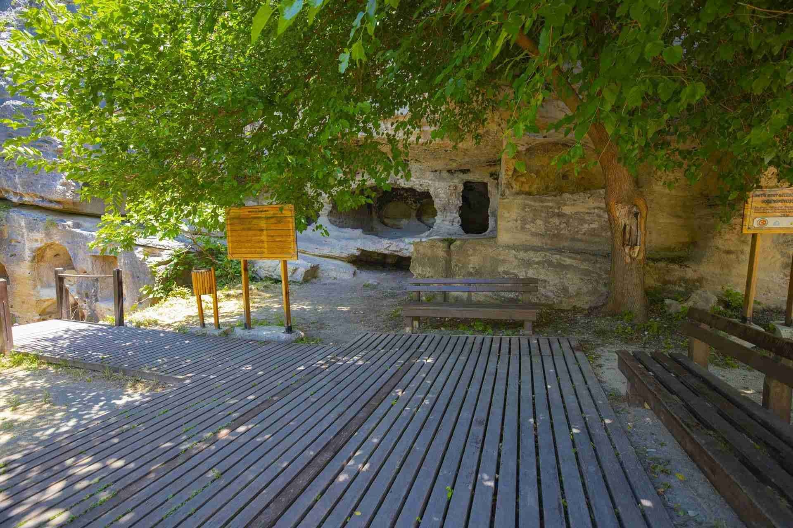

|  |
Hatay İli Samandağ ilçesinde bulunan Titus Tüneli, uzunluğu ve yüksekliği ile etkileyici bir yapıdır. İki bin yıl önce insan eliyle yapılmış olması, tünelin büyüsünü daha da arttırmaktadır. Deniz kıyısının hemen üst kısmında bulunan tünelin yapımına Roma İmparatoru Vespasianus (MS 1. yüzyıl) Dönemi’nde başlanmış, oğlu İmp Titus Dönemi’nde tamamlanmıştır. Tümüyle dağ içine oyulan tünel, 1380 m uzunluğunda, 7 m yüksekliğinde ve 6 m genişliğinde olup 130 m’sinin üstü kapalıdır.
Tünel yapımının amacı sel sularını yönlendirmek, kenti su baskınlarından korumak ve kent limanının dağdan gelen alüvyonlardan korumaktır. Samandağ İlçesinin deniz kıyısında bulunan Çevlik Ören Yerinin giriş kısmına kadar araçla ulaşılabilmektedir. Ören Yerinde bulunan Titus Tüneli, Beşikli Mağara ve Kaya Mezarlarına patika yollardan yürünerek keyifli bir kültür gezisi ziyaretçilerini beklemektedir.
BEŞİKLİ MAĞARA VE KAYA MEZARLARI
Titus Tüneli’nin yaklaşık 100 m doğusunda bulunan ve geniş bir alana yayılan mezarlar yüksek ve kayalık yamaçlara oyulmuştur. Aralarında en çok ilgi çeken kaya mezarı ise halk tarafından ‘’Beşikli Mağara’’ olarak adlandırılmaktadır. Beşikli Mağara, tamamen kireçtaşına oyularak yapılmış olup, girişi sütunlu ve içerisinde 12 adet mezar bulunmaktadır. Mezar odasının içinde yan yana ve aynı boyutlarda işlenerek biçimlendirilmiş iki adet sandukalı mezar vardır.
|